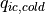
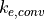

13. Acronyms¶
[t]ll ABL & Atmospheric Boundary Layer
AMIP & Atmospheric Model Intercomparison Project
AMWG & Atmospheric Model Working Group
BATS & Biosphere-Atmosphere Transfer Scheme
CAM & Community Atmosphere Model
CAPE & Convectively Available Potential Energy
CCM & Community Climate Model
CCN & Cloud Condensation Nucleus
CCSM & Community Climate System Model
CFC & Chloro-Fluoro Carbon
CFL & Courant-Friedrichs-Levy Condition
CGD & NCAR Climate and Global Dynamics Division
CGS & Centimeters/grams/seconds
CKD & Clough-Kneizys-Davies
CLM & Community Land Model
CMS & (NCAR) Climate Modeling Section
CSIM & Community Sea-Ice Model
CWP & Condensed Water Path
DAO & (NASA Goddard) Data Assimilation Office
DAS & Data Assimilation System
DISORT & DIScrete-Ordinate method Radiative Transfer
ECMWF & European Centre for Medium Range Forecasts
EOF & Empirical Orthogonal Function
FASCODE & FASt atmosphere Signature Code
FFSL & Flux-Form Semi-Lagrangian Transport
FFT & Fast Fourier Transform
FV/fv & Finite Volume
GCM & General Circulation Model
GENLN & General Line-by-line Atmospheric Transmittance and Radiance
Model
GEOS & Goddard Earth Observing System
GFDL & Geophysical Fluid Dynamics Laboratory
GSFC & Goddard Space Flight Center
GMT & Greenwich Mean Time
[t]ll HadISST & Hadley Centre for Climate Prediction and Research SST
HITRAN & High-resolution Transmission Molecular Absorption Database
ICA & Independent Column Approximation
IPCC & International Panel on Climate Change
KNMI & Royal Netherlands Meteorological Institute
LBL & Line by line
LCL & Lifting condensation level
LSM & Land Surface Model
MATCH & Model for Atmospheric Transport and Chemistry
M/R & Maximum/Random overlap
NASA & National Space Administration
NCAR & National Center for Atmospheric Research
NCEP & National Center for Environmental Prediction
NOAA & National Oceanographic and Atmospheric Administration
NWP & Numerical Weather Prediction
OI & Optimal Interpolation
OPAC & Optical Properties of Aerosols and Clouds
PBL & Planetary Boundary Layer
PCMDI & Program for Climate Model Diagnosis and Intercomparison
PPM & Piece-wise Parabolic Method
RHS & Right Hand Side
RMS & Root-mean Square
SCMO & Sufficient Condition for Monotonicity
SI & International System of Units
SOM & Slab Ocean Model
SST & Sea-surface temperature
TOA & Top Of Atmosphere
TOM & Top Of Model
UCAR & University Corporation for Atmospheric Research
WKB & Wentzel-Kramer-Brillouin approximation
14. Resolution and dycore-dependent parameters¶
The following adjustable parameters differ between various finite volume resolutions in the . Refer to the model code for parameters relevant to alternative dynamical cores.
| Parameter | FV 1 deg | FV 2 deg | Description | |
|---|---|---|---|---|
 |
2.e-4 | 2.e-4 | threshold for autoconversion of warm ice | |
 |
18.e-6 | 9.5e-6 | threshold for autoconversion of cold ice | |
| 5.e-6 | 5.e-6 | stratiform precipitation evaporation efficiency parameter | ||
 |
.92 | .91 | minimum RH threshold for low stable clouds | |
 |
.77 | .80 | minimum RH threshold for high stable clouds | |
 |
0.10 | 0.10 | parameter for deep convection cloud fraction | |
 |
750.e2 | 750.e2 | top of area defined to be mid-level cloud | |
 |
1.0e-4 | 1.0e-4 | shallow convection precip production efficiency parameter | |
| 3.5E-3 | 3.5E-3 | deep convection precipitation production efficiency parameter | ||
 |
1.0E-6 | 1.0E-6 | convective precipitation evaporation efficiency parameter | |
| 1.0 | 0.5 | Stokes ice sedimentation fall speed (m/s) |
Table: [table:adjustableparameters]Resolution-dependent parameters